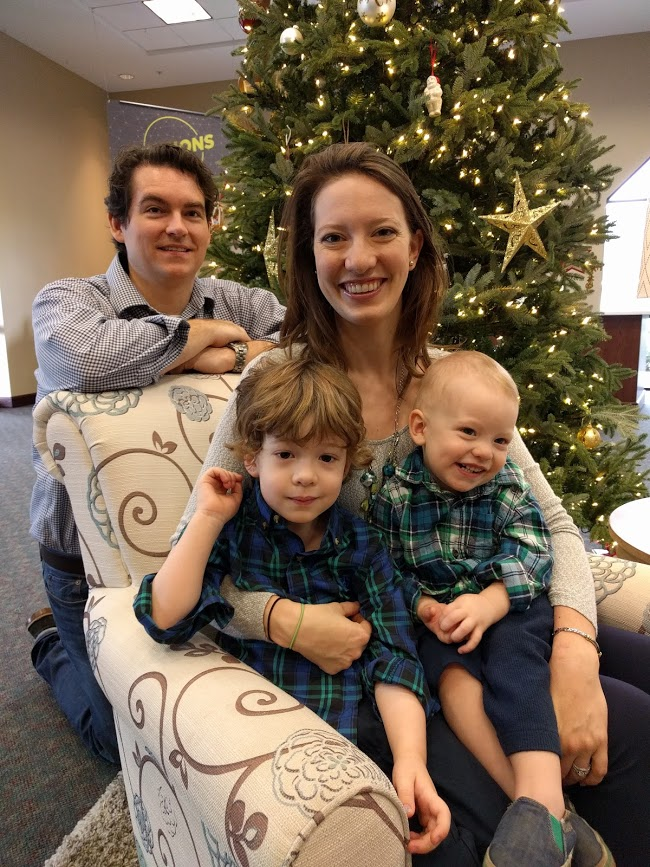

Who We Are
I am incredibly thankful to be the mommy of two wonderful boys: RocketMan (age 4) and Gig (20 months). Call me biased, but I think they are the sweetest two boys who ever lived.
And that they are also a total, complete, unmitigated disaster. These are a few stories about our days together; making incredible messes and having lots of fun.
RocketMan is the consummate big brother. He thinks he is the boss of his baby brother, Gig. He is usually mistaken.
But then again, I find that I am often mistaken when I think that I'm the boss, so...
The Christmas Lights

Once upon a time, hanging our Christmas lights and decorations was a straightforward job that took a few hours.
I spent the most time carefully unpacking and hanging the scores of heirloom ornaments for each of our three Christmas trees.
My amazing (and indulgent) hubby used to help me set up one in our bedroom, one in the formal living room, and a small live one in the family room.
We almost always got it all done the weekend after Thanksgiving.
Fast forward to a life post-babies. We have one fake tree in the family room and my heirloom ornaments haven't been on display since my eldest was born.
We have bells and paper ornaments on the tree because Gig likes to shake the branches - the bells act as a warning system so that I know to run and stop the tree from falling.
We got all the boxes of lights and the tree out of the attic almost two weeks ago and we still aren't done putting things out.
I decided that today was the day to finally get the outdoor Christmas lights finished - no matter what. We did it, but it almost killed us.
A quick list of what they decided to do while I was trying to lay out extension cords:
- The baby took his shoe off and hid it in the bushes.
- They found a mud puddle and rolled around in it.
- They took every toy out of the garage and tried to "share" them with the neighbors by leaving them in their yards.
- They chased each other up and down the driveway until they crashed into each other and both spent fifteen minutes wailing and weeping.
- They picked the leaves off the poinsettias and poked at the sap that came out.
Just Love
Example‑number‑next of their chaos.
As I am typing, RocketMan is climbing behind me into my desk chair to try to hug me. Giggy carried his dragon puppet over and pretended to make it bite me to get my attention. And then he put it into timeout because "teeth are for food, not people."
Under all the crazy, these sweet little souls just want love and attention from their momma. And she needs an hour or two to get her homework finished.